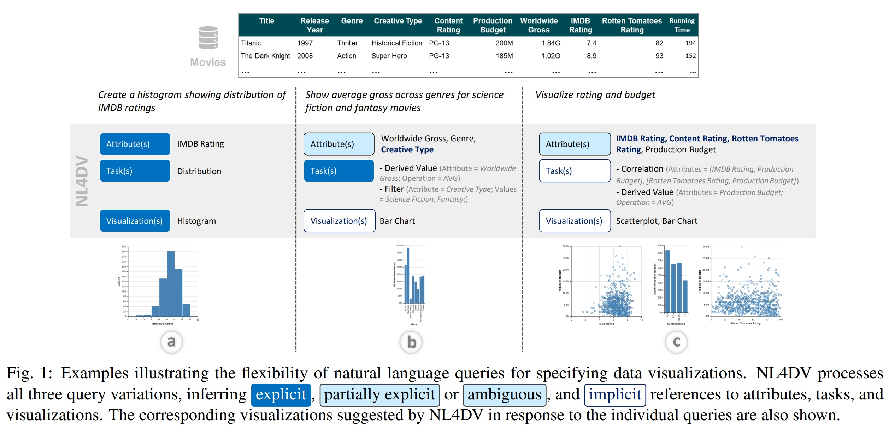

Study of NL4DV
Selecting and hiring students who meet specific criteria is a key task for most schools. The traditional way of processing CVs is becoming inefficient due to the growing number of CVs and the increasing complexity of the information contained in them. Traditional techniques typically involve a labor-intensive process of naked eye searching for important information in the CVs of candidates applying, reviewing their various qualifications and then generating a shortlist of suitable candidates to interview. In this technological age, the process of screening CVs should become smarter and at the same time more convenient. This study proposes a system that extracts valuable information from CVs and visualizes it, evaluating and ranking students' CVs according to the school's admissions requirements for different disciplines. To achieve the desired goal, the entire process was divided into three parts. The first part involves the reading of key information from the CV using NLP and the second part involves the visualization of key information from the CV. A design space was used to provide the user with multiple options for visualizing individual CVs. Finally, we provided an overview of all the students' CVs, presenting the ranking of their overall CV scores.